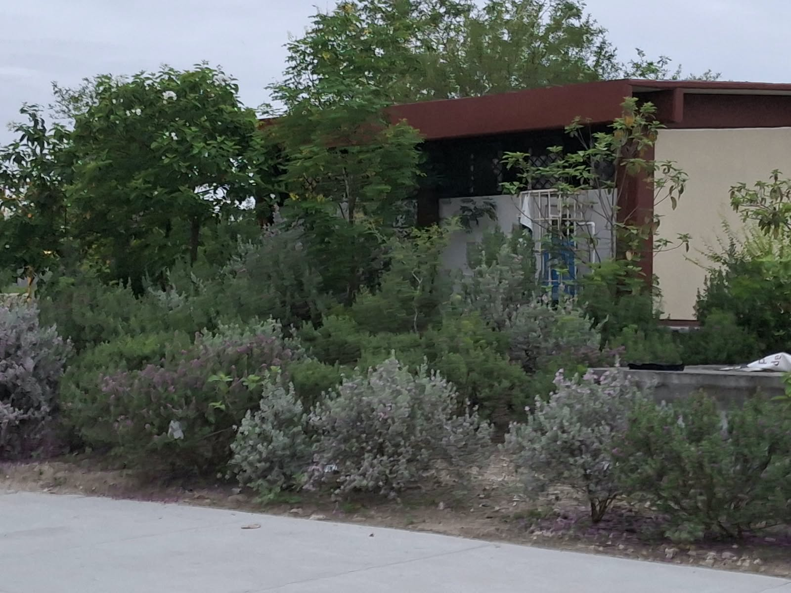
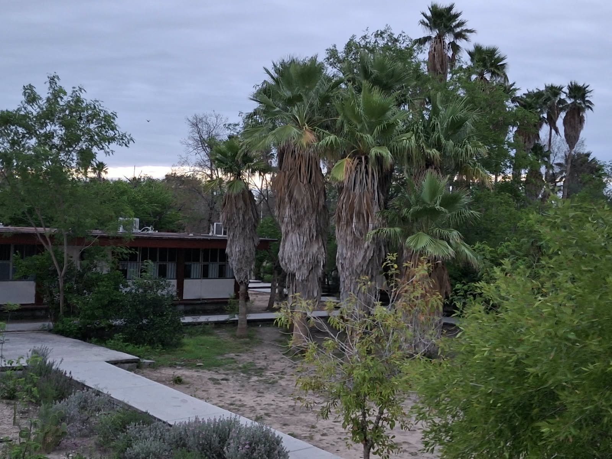

Areas verdes
El itace tambien cuenta con areas verdes en el plantel.
Estas plantas fueron puestas por el mismo plantel, o los maestros en
colaboracion de alumnos del plantel mismo que aportan
con plantas originarias del estado de Tamaulipas y plantandolas,
dandole identidad al plantel y dando a conocer estas especies
a quienes desconocian que este tipo de plantas estaban ubicadas
en nuestro estado.


Cenizo.

Nopales.

Cenizo.


Areas verdes.